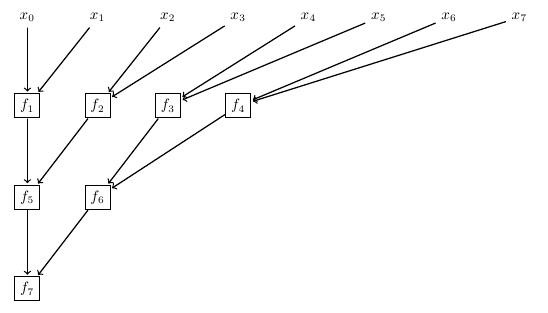
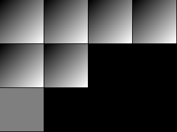
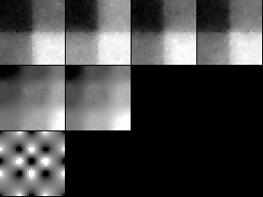
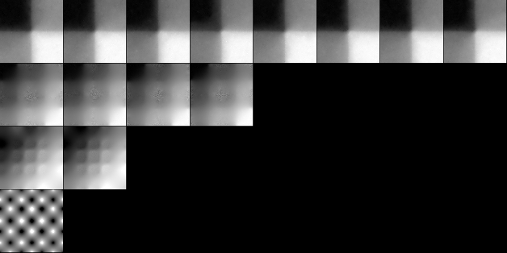
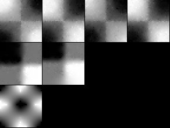
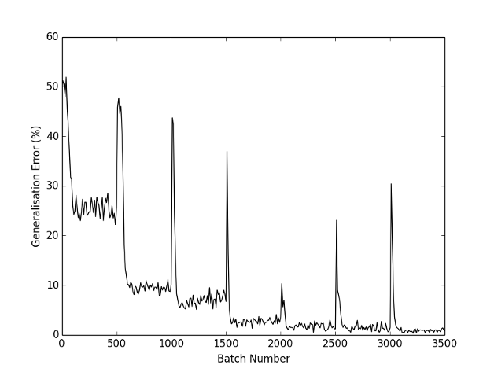

1. Introduction
To date there exists little consensus on how deep neural networks can generalise more effectively than shallow models. Certain properties, such as sparsity, "parsimony" and smoothness, have been argued to improve generalisation. However, arguments for these tend to either be unclear in justifying why the property should improve generalisation, or even vague in characterising the property itself.
In this report, by studying a simplified class of models related to neural networks, I provide a precise characterisation of a property which I show to improve generalisation on the odd parity problem. By studying a problem as simple as this, I am also able to explain how the property improves generalisation and argue why it is likely to do so in existing, state-of-the-art neural networks. I corroborate my argument in Section 6 by showing that it is supported by the recent work of Shang et al. (2016) and that it clarifies existing explanations for methods shown to improve generalisation.
The property itself is given in Section
2. A Simplified Class of Function Approximators
Neural networks have been criticised for their lack of interpretability. We can remedy this issue by restricting our attention to a subset of function approximators. One key factor which reduces the interpretability of a trained neural network is that the many-dimensional manifold which it learns is difficult to visualise. Therefore, in this report, discussion focuses on a model made up by the composition of arbitrary non-linear functions from \(\mathbb{R}^2\) to \(\mathbb{R}\). Such functions are easy to visualise because they describe a surface in three-dimensional space. More specifically, in this report, I model a function of 8 inputs such that $$ f(x_0, \ldots , x_7) = f_7(f_5(f_1(x_0, x_1), f_2(x_2, x_3)), f_6(f_3(x_4, x_5), f_4(x_6, x_7))). $$ Therefore, learning \(f\) can be achieved by jointly learning each \(f_1, \ldots, f_7\). The binary structure of this model can seen most easily by using the diagram in Figure 1.
To aid analysis of a trained model, the inputs and outputs to each \(f_1, \ldots, f_7\) are constrained to be in the interval \([0, 1]\).
It is important to note that because each \(f_1, \ldots, f_7\) can represent an arbitrary non-linear function, they are similar to neural network with a single hidden layer. In fact, a neural network trained on the 4-variable parity problem was able to learn functions similar in shape to those shown in Figure 3. However, training was found to be slow, so a custom model (described in the Appendix) was used instead. It bears repeating that the key finding in this report applies to any kind of multi-layered function approximator.
The exact specification of the model used in this report, including links to source code can be found in the Appendix.
3. A Simple Training Task
Contrary to most current empirical research in machine learning, I also choose a task simple enough that its solution can be thoroughly analysed: The odd parity problem. However, the problem is somewhat modified to aid visualisation of its solution; Instead of having inputs in the set \(\{0, 1\}\), the inputs are allowed to be in the interval \([0, 1]\) and must be rounded to the nearest integer by the model before their odd parity is computed as usual.
4. Training and Analysis
4.1 Training Data
A very large training set was used to reduce the chance that my analysis would rely on artefacts in the dataset to draw spurious conclusions. Even though the integer version of the 8-bit parity problem requires only \(2^8 = 256\) unique examples to be learned perfectly, 100,000 were used for this modified version. This number of examples is practically guaranteed to saturate the model's capacity.
Each example was generated by drawing 8 values from a uniform distribution on the interval \([0, 1]\) and automatically labelling them as described in Section 3.
4.2 Initialisation
Each \(f_1(x, y), \ldots, f_6(x, y)\) was initialised to approximate the average of its arguments. That is, \(f_1(x, y), \ldots, f_6(x, y) \approx (x + y)/2\). The output function was initialised to be 0.5. In other words, \(f_7(x, y) = 0.5\). This is shown in Figure 2.
4.3 Training
Training was accomplished using stochastic gradient descent. A custom-made regulariser and normalisation scheme, akin to batch normalisation (Ioffe and Szegedy, 2015), were also implemented. These were not gradient-based.
A full description of the training method used is largely aside from the focus of this report and has been omitted from this section. It can be found the Appendix.
4.4 Analysis of A Trained Model
4.4.1 The Trained Model
Figure 3 shows the functions learned after training.
It can be seen that the top-most row of four functions (which correspond to \(f_1, \ldots, f_4\) in Figure 1) have come to approximate the function $$ \begin{align} f_{1:4}(x_0, x_1) &= \begin{cases} 0 & x_0 \lt \frac{1}{2}, x_1 \lt \frac{1}{2} \\ \frac{1}{2} & x_0 \lt \frac{1}{2}, x_1 \geq \frac{1}{2} \\ \frac{1}{2} & x_0 \geq \frac{1}{2}, x_1 \lt \frac{1}{2} \\ 1 & x_0 \geq \frac{1}{2}, x_1 \geq \frac{1}{2} \end{cases} \\ &= \mathrm{avg}(\mathrm{round}(x_0), \mathrm{round}(x_1)) \\ &= \frac{1}{2} \sum^{2 - 1}_{i = 0} \mathrm{round}(x_i), \end{align} $$ where the \(\mathrm{round}\) function rounds its argument to the nearest integer. This is equivalent to counting the number of arguments which round to 1.0 then normalising that quantity to be in the range 1.0.
Each function in the middle layer also computes a normalised count: $$ \begin{align} f_{5:6}(f_{1:4}(x_0, x_1), f_{1:4}(x_2, x_3)) &= \frac{1}{4} \sum^{4 - 1}_{i = 0} \mathrm{round}(x_i). \end{align} $$ It is only in the final layer that the count is determined to be odd or even. Figure 4 illustrates that, even in the 16-variate version of the problem, every layer but the last will learn to (approximately) count the rounded inputs.
It is worth noting that the solution obtained on this 8-variable parity problem is an artefact of the chosen initialisation. If it had been chosen differently, the learned functions may have been different or may not have been successfully learned at all. In fact, the initialisation scheme was selected selected deliberately to facilitate easy training and produce a model which is straightforward to analyse.
4.4.2 Generalisation in The Trained Model
The way the trained model computes the parity of its input is worth noting because it can lead to sub-optimal generalisation. This is an important observation because there is nothing to prevent this kind of shortcoming in other multi-layered models like neural networks.
To form a more precise characterisation of this shortcoming, consider the case where the dataset lacks examples whose rounded sum is equal to 4. Because the model learns to compute a count before checking for parity, one could not expect it to make the correct prediction in this situation. Consider also that the learned solution in Figure 3 would still be correct if the black regions in the first layer became white, or vice versa. Intuitively, this is because $$ \mathrm{parity}(0, 1, x_2, x_3, x_4, x_5, x_6, x_7) = \mathrm{parity}(1, 0, x_2, x_3, x_4, x_5, x_6, x_7). $$ More generally, the parity function is invariant to the order of its arguments.
Also notice that shading the black and white regions to be the same is a simplification in the sense that it reduces the number of possible outputs that the top-most layer can pass on to the next. More formally, it reduces the image of the layer under the training set. This can improve generalisation because the subsequent layer will only need learn to handle a reduced number of cases.
Now that it has been identified that the model can be simplified by reducing the image of the first layer under the training set, a (crude) method can be devised to do so as part of a training procedure. Under this method, the trained model from Figure 3 is taken, and each \(f_1, \ldots, f_4\) is re-initialised to 0.5 and trained end-to-end until convergence. The resulting model can be seen in Figure 5. Notice that, because training was carried out end-to-end, the functions downstream from the first layer have become more parsimonious as well.
This procedure can be repeated on subsequent layers. However, it is important to note that subsequent layers are not having their image under the training set reduced. Rather, they are having their image under their input reduced. An animation of the entire procedure is shown in Figure 6. On this toy problem, the technique typically finds the simplest solution in the sense that the image of each layer under its input is as small as it can be while still fitting the training set. However, due to to the stochasticity of the training procedure used here, this is only likely to happen, not guaranteed.

Once re-training has been completed (Figure 7), the model no longer feeds forward a rounded count before computing parity in the output layer. Therefore, although if the model had never been trained on examples whose rounded sum was 4, it would still be able to accurately predict the correct label.
5. Function-wise Re-training on An Under-Complete Dataset
In the previous section I argued that generalisation can be improved by using a function-wise re-training technique to reduce the image of each layer under its input. However, because I used many examples, the only claim that was empirically tested was that the image of each layer under its input could be reduced, not that doing so can improve generalisation. In this section, I aim to empirically verify both claims.
To do so, a 100,000-example dataset was randomly generated as described in Section 4.1. Then any examples whose rounded elements summed to 0, 1, 2, 6, 7, or 8 were removed. That is, only examples which summed to 3, 4, or 5 were retained. The training and re-training procedure outlined in the previous section was carried out on these data. Re-initialisations occurred after the \(500^{\mathrm{th}}, 1000^{\mathrm{th}}, 1500^{\mathrm{th}}, \ldots, 3000^{\mathrm{th}}\) batches. Figure 8 shows the classification error on randomly generated samples whose rounded elements can have any sum between 0 and 8, inclusive. The solution of a typical run is qualitatively the same as the one shown in Figure 7. Figure 9 shows the model during training.

6. Discussion
The experiments recorded in this report strongly suggest that the principal way (possibly the only way) to reduce generalisation error in any multi-layered model is to reduce the image of each layer under its input. If this hypothesis holds, any method which successfully combats over-fitting in deep neural nets is an image-reduction technique.
Strong evidence for this hypothesis can be found in Shang et al. (2016), who “[examined] existing CNN models and [observed] an intriguing property that the filters in the lower layers form pairs (i.e., filters with opposite phase)”. Shang et al. suggested that the learned filters' tendency to be linearly dependent harmed performance. Upon preventing these superfluous filters from being learned, a significant improvement in generalisation was noted. The work recorded in this report suggests that it is not the fact that extraneous filters must be learned which hampers generalisation. Rather, it is the fact that the later layers must learn how to use those extra filters.
This hypothesis can also be used to elaborate on the explanation for how dropout (Srivastava et al. 2014) works. The hypothesis presented by Srivastava et al. is that that dropout works in the following way:
Standard backpropagation learning builds up brittle co-adaptations that work for the training data but do not generalize to unseen data. Random dropout breaks up these co-adaptations by making the presence of any particular hidden unit unreliable.
However, the work presented in this report suggests that it is better to interpret dropout as a technique which slightly corrupts the surface that each layer represents. Under this interpretation, the more intricate a surface is, the less likely its original form is to be accurately represented by a corruption. This makes it least challenging to learn simple functions, which are qualitatively more similar to the top-most layer in Figure 3 than the bottom-most layer.
The work in this report also provides helps to explain a property of sparsity, in which, perhaps counter-intuitively, more sparsity does not necessarily imply better generalisation (Glorot et al., 2011; Mass at al., 2013). The hypothesis forwarded here suggests that sparsity is only helpful insofar as it reduces the image of each layer. Because the outputs of neurones are typically real-valued, they can represent similar inputs using multiple output values. This multiplicity of output values for the same kind of input is what harmed generalisation on the problem presented in this report.
7. Future Work
A natural line of work to pursue is to develop an image-reduction technique which can be applied to large, state-of-the art neural networks. To date, I have made some preliminary attempts, however these have largely proven to be unsuccessful. Neural networks similar enough to the model presented here are difficult to train, even though easy to apply the re-training technique to in principle. However, sufficiently dissimilar networks are easy to train yet difficult to apply the re-training technique to.
It is possible that re-training is a poor strategy in neural networks, and image-reduction should instead be encouraged by augmenting the objective function.
Appendix
Model Description
The model used throughout this report can be found here. The model and data-generation procedure used in Section 5 can be found here.
Essentially, each function (analogous to each \(f_1, \ldots, f_7\) in Figure 1) was modelled by a discrete grid of “pixels”. In this report, each function was given was given a “resolution” of 36-by-36. Each pixel was constrained to have values between 0.0 and 1.0, inclusive. Arguments which fell outside of this range were clipped.
Training
Gradients
Because of the discrete nature of the model, it is non-differentiable. To apply gradient-based optimisation, I defined the partial derivatives of each function with respect to its arguments so that they would be similar had I used continuous functions instead.
More specifically, I defined the partial derivatives of each function with respect to \(x\) as the slope after linearly interpolating along the \(x\)-axis only. The partial derivative with respect to \(y\) was defined analogously. Clearly this does not cover the cases were, for example, \(x \in \{0.0, 1.0\}\). In situations where the gradient was to be computed near the edge of the function, the two nearest pixels along the axis of differentiation were chosen instead.
During the backward pass of backpropagation, the nominal slope of each function was multiplied by 2.0 to help prevent the exploding gradient problem. (Although the model could still be easily trained without doing so.)
Regularisation
The discrete nature of the model gave it a propensity to get stuck in local minima, where each function was rapidly-varying. Essentially, the learned functions would look like noise, with no clear pattern. To overcome this, a Gaussian blur, implemented as a box blur repeated thrice, was applied to each function after every batch. This smoothed the functions, making training easier.
Normalisation
While the aforementioned regularisation scheme made the learned functions smoother, it also caused the distinctly-shaded regions on the surface of each to gradually become smaller during the course of training. In some cases they would coalesce, causing the model to forget what it had learned. The “region-shrinking” behaviour was associated with the earlier layer becoming greyer (or flatter, if one views it as a surface).
As a workaround, after regularisation, each function (except the output) was normalised so that its maximum value was 1.0 and its minimum was 0.0. This forced the regions in the layer which immediately followed to be evenly spread out.
It is interesting to note that this technique is similar to batch normalisation (Ioffe and Szegedy, 2015), however there are a few differences. For instance, instead of normalising based on variance, the technique here normalises based on maximum and minimum values. Also, instead of normalising based on the image of the layer under its input, this technique normalises the image of the function itself. This technique is also not gradient-based.
Stochastic Gradient Descent
Although I have mentioned “batches”, the model was updated after every example. The concept of a batch was only used to time regularisation, normalisation and checkpoints. Each example was drawn randomly from the training set. Somewhat arbitrarily, the learning rate used was \(1 /\mathrm{res}\), where \(\mathrm{res}\) is the resolution of each function. Parameters (pixel values) were clipped to be within the interval \([0.0, 1.0]\) after each update.
Throughout this report, \(\mathrm{res} = 36\) was chosen. The batch size was defined to be \(\mathrm{res} \times \mathrm{res}\).
Mean-squared error was used as the objective function.